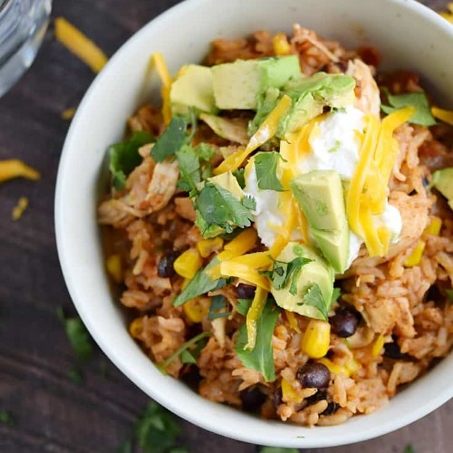

Instant Pot Chicken Taco Bowls

Southwest-style chicken taco bowls made easy in the Instant Pot!
An easy one-pot rice bowl with chicken, salsa, beans, corn. Great to modify with your favorite toppings!
Made in a 6qt Instant Pot
Ingredients
- 3 teaspoons chili powder
- ½ teaspoon ground cumin
- ½ teaspoon dried oregano
- ¼ teaspoon sea salt
- ¼ teaspoon black pepper
- ⅛ teaspoon cayenne pepper or more to add more heat
- 1¼ pounds boneless, skinless chicken breasts
- 1 tablespoon olive oil
- 1 cup diced, yellow onion
- 2 cloves fresh garlic, minced
- 1 cup chicken stock
- 1¼ cup long-grain, white rice rinsed and drained
- 15.25 ounce can whole kernel corn rinsed and drained
- 15 ounce can black beans rinsed and drained
- 16 ounce jar tomato salsa
- ½ cup chopped cilantro
- any toppings of your choice
Steps
- Mix the chili powder, cumin, oregano, salt, pepper, and cayenne together in a small bowl. Sprinkle both sides of the chicken breasts with with the seasoning mixture, set aside.
- Plug in your pressure cooker and press the “Saute” button. Add the olive oil to the liner when the display reads “HOT”. Add the onions and cook until they start to soften, about 3 minutes.
- Add the garlic, stir and cook for one minute. Pour in the chicken stock and press the “Cancel” button. Scrape the bottom of the liner to remove any browned bits.
- Place the chicken breasts in the pot. Add the rice, salsa, black beans, and then the corn.
- Seal the lid and check to make sure the knob is in the “Sealing” position. Press the “Manual” button, check to make sure it is High Pressure, and adjust the time to 8 minutes using the + and – buttons.
- When the pressure cooker beeps, allow the pressure to release naturally for 10 minutes. Turn the knob to manually release any remaining pressure.
- Remove the chicken breasts and shred them using two forks. Return the shredded chicken to the pot and stir to combine.
- Stir in the cilantro and serve topped with your favorite taco toppings.